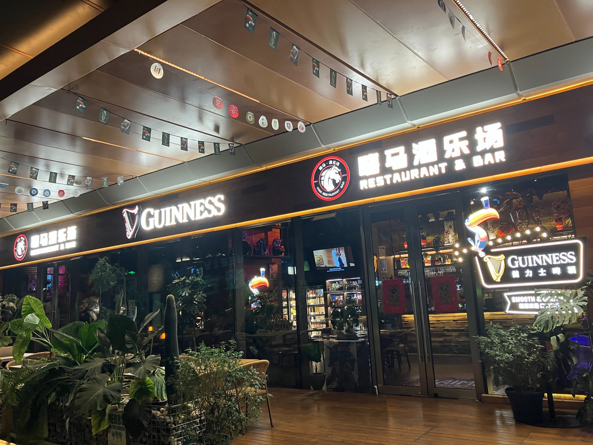
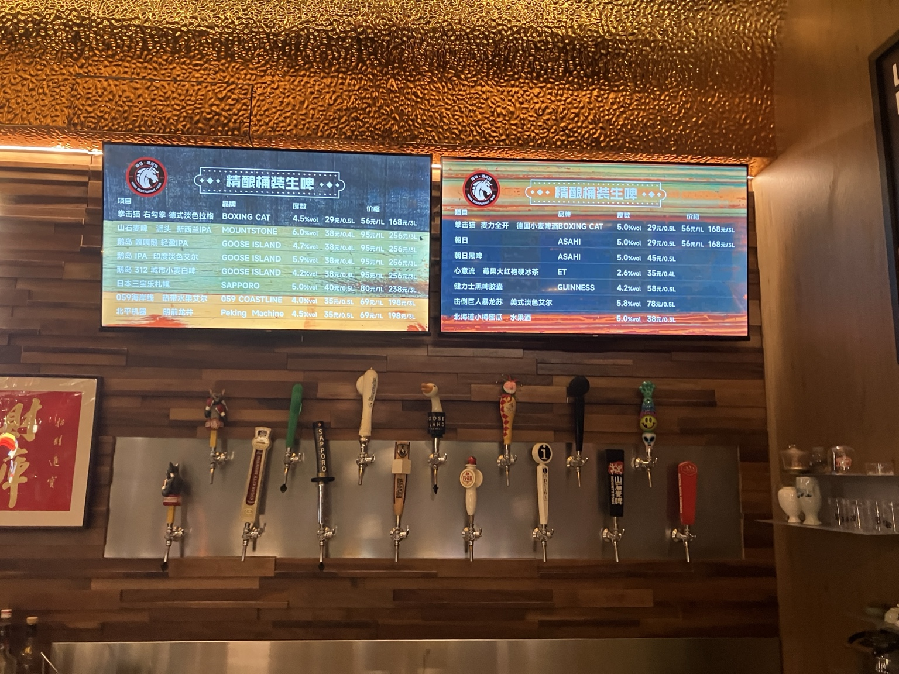
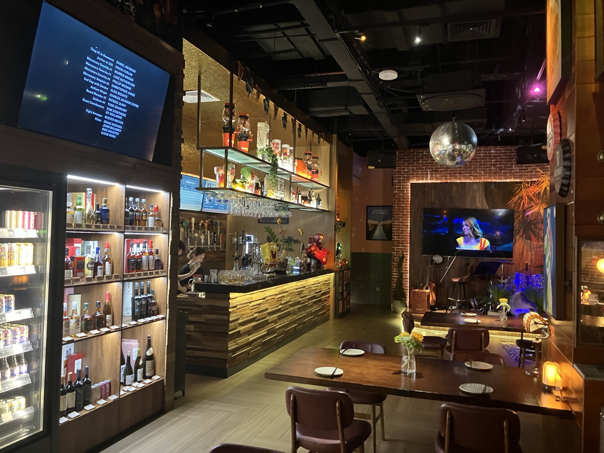
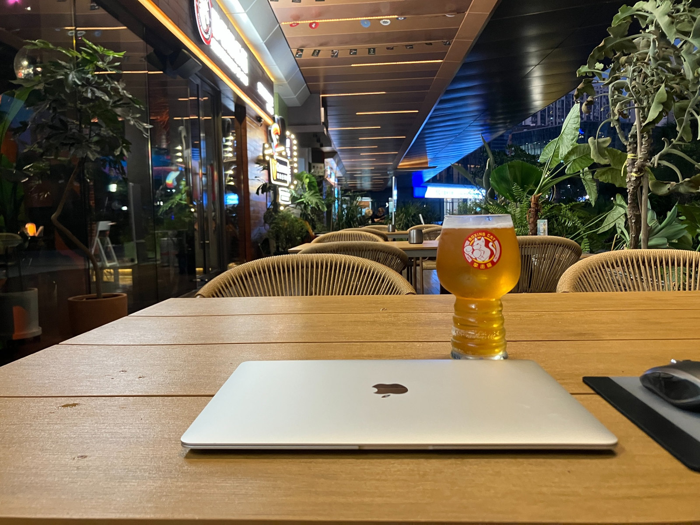

中国・廈門に来た。
空港に着いたのが2026年10月1日の夜。
折しも国慶節初日。
廈門は初訪で土地勘もないから、適当に空港からタクシーで10分ほどの宿に泊まった。
明けて翌日、近くをぶらついて、目に入ったモールに入ると大混雑。
まじで超絶大混雑。
ラッシュ時の新宿駅並みの混雑。
これはとても街歩きできる雰囲気じゃないし、
旧市街やコロンス島の方に行ったら、
さらに激混みだろうなーと思い、
国慶節が終わるまでは、廈門島外で過ごすことにした。
のんびり穏やかに過ごしたいけど、
ちゃんと現地廈門人が暮らしてる地区がよかったから、
少し下調べした結果、集美区に宿をとることに決めた。
チェックインを終えて、街の散策を始めるとすぐにギネスの看板が目に留まった。

中国でdraftが飲める場所を見つけるのはまあまあ難しくて、
pub文化が根付いてる香港や、どこでも簡単にdraftが飲める日本とは勝手が違う。
こんなにすぐ見つかるなんてありがたいと思い、
若干心躍らせて入店したのが、集美到着初日の夜。
店員さんは中国語オンリーだけど、
スマホ翻訳で、tapがどんな銘柄なのか説明してくれて、
接客は丁寧だった。
「Asahiがいい？」
って聞かれたけど、
さすがに飲み慣れた銘柄を異国で味わってもおもしろくないから、
中国のブランドらしいBoxing Catのtapを注文した。
日本で飲むような、キンキンに冷えたdraftの爽快感とはまた違うけど、
しっかりcraft感を味わえるdraftだった。
座席レイアウトは広々してるし、
店内にもテラスにも洒落乙な音楽が流れていて、
初訪の印象はとても良かった。

2日目は周辺をしっかり散策して、
居心地の良さそうなpubを探したんだけど、
どうもピンと来る店が見つからず、
わりと夜遅くに初日のpubに戻ってきた。
その日は国慶節中盤、土曜の夜で、
店内は昨日よりだいぶ賑わっていた。
それでも店員さんは手を上げて挨拶してくれて、
「昨日と同じtapでいい？」
みたいな仕草をしてくれた。

3日目も同様、
手を振って迎えてくれた。
これなのよ。
こーゆーのなのよ。
店内の居心地とか、
draftの味や品質も、もちろん大事なんだけど、
やっぱり「人」。
笑顔で手を振って迎えてくれる。
昨日飲んだtapを覚えてくれている。
ほんの些細なやりとりかもしれないけど、
あるとないでは、店の印象が断然変わってくる。
もちろん、人との交流がなくても、居心地のいいpubや店はたくさんある。
でも、たとえ些細なことでも、
「人」との出会いがあった場所は、
旅の物語の一部になる。
店員さんたちはみんな中国語オンリーで、
私は中国語が話せないから、
言葉ではほとんど会話できないんだけど、
言葉を介さなくても伝わってくるものがある。
あー、温かく迎えてくれてるなー、って伝わってくる。
その後も集美に滞在している間は、文字通りほんとに毎晩通った。

そろそろ集美を離れるかもって頃に、
（高評価のクチコミレビューとか書いて、この店に貢献したいけど、
中国だとGoogle Maps使えないんだよなー。
じゃあ自分ができることと言ったら、
Webで記事書く？🤔）
って考えて、
会計が終わったあとに、
「我真的很喜欢你们这里，也很想推荐给其他旅行者。
可以让我在我的网站和社交媒体上介绍你们这里吗？
还有，可以一起拍张照片吗？」
（ここが本当に気に入ったし、ほかの旅行者にも紹介したい。
WebサイトやSNSで紹介してもいい？ それから、一緒に写真を撮ってもらえる？）
って、スマホで表示したら、
快諾中の快諾。
写真10枚くらい撮ったかな笑
もっと撮ったかも笑
やっぱり旅は浪漫があっていいなー。
世界にまたひとつ、沼れる場所が増えたなー。